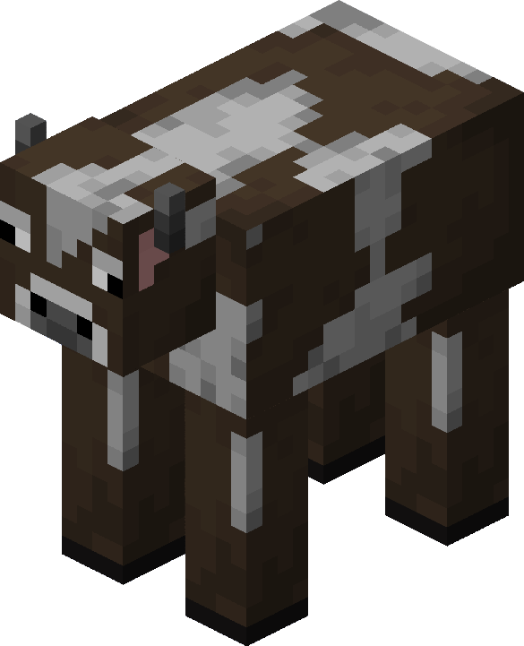
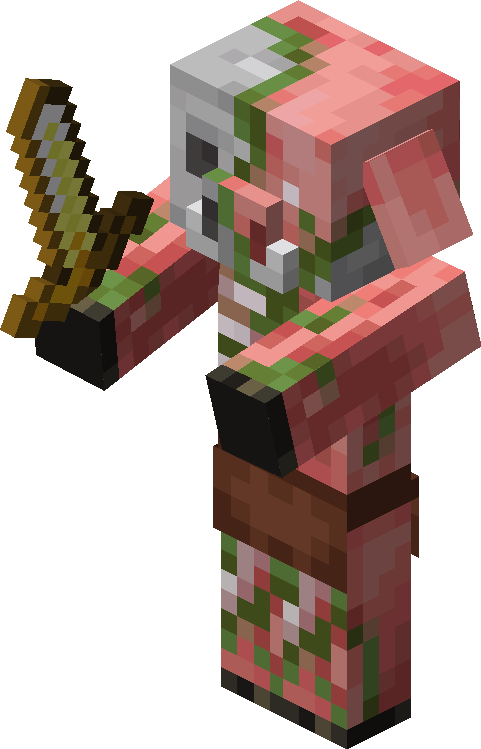
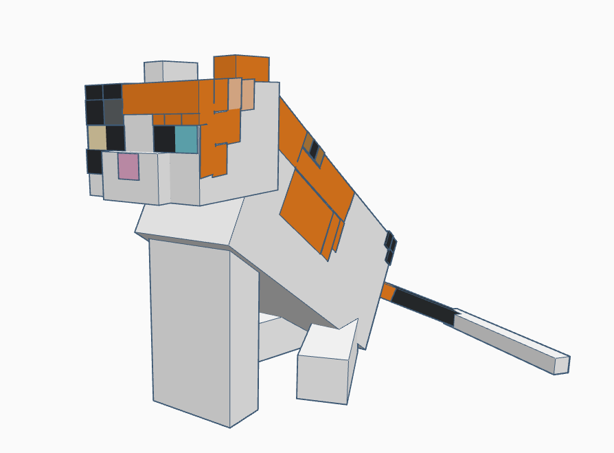

До двох груп одразу належать: павуки (вдень — нейтральні, вночі — ворожі), залізні ґолеми (вони можуть створюватися як гравцем, так і селянами), висушувач (створюється гравцем, але є ворожим до нього) та піґлін (нейтральний до гравця, якщо той одягнений в золоту броню). 
Якщо гравець створив залізного ґолема, то ґолем не нападе на творця за жодних умов, а якщо ж ґолема створили селяни, то при спробі гравця вдарити селянина чи самого ґолема, він буде оборонятись.
до дружніх мобів належать: корови, вівці, свині, курки, папуги, кальмари, селяни, кажани, мушруми (грибні корови), черепахи, різні види риб, оцелоти, мандрівний крамар, блукач. Вони не нападають, навіть якщо їх атакувати. 
до нейтральних мобів належать: свинозомбі, печерні та звичайні павуки (при денному світлі, у темних місцях вони ворожі), ендермени (мандрівники Краю) та білі ведмеді (крім дитинчат), дельфіни, лами та лами крамаря, залізні ґолеми (в селах), панди, бджоли, піґліни та кози. Стають ворожими, якщо на них напасти (свинозомбі, білі ведмеді тощо), подивитись не через прозорий об'єкт або не маскуючись (ендермени чи залізний ґолем), навпаки не спостерігати за ними довгий час (кози) або вдарити деякого іншого моба (лами крамаря будуть плюватись у гравця який вдарив мандрівного торговця, при нападі на зомбованих піґлінів на вас нападуть всі моби цього типу).

до ворожих мобів належать: зомбі, втопленники (створюються, коли зомбі тоне), скелети, скелети-наїзники, скелети-візери, візери, примари, павуки (вдень у темних місцях і вночі), кріпери, ґасти, слимаки, магмакуби, лусківниці, ендерміти, пломені, відьми, зомбі-селяни (створюються, коли селянина заражає зомбі), вартові, старі вартові, шалкери, поборники, бісики, водяники, риба фугу, фантоми, розбійники, руйнівники, рубники, гоґлін, піґлін, брутальний піґлін. Вони завжди нападають на гравця, щойно помітять його. У творчому режимі всі ворожі моби стають пасивними, крім Ендердракона та висушувача. 
до домашніх мобів належать: коти, приручені вовки, папуги,, коні (віслюки, мули), лами, лисиці, оцелоти й аксолотлі. Приручені вовки та лисиці б'ються з усіма мобами, крім кріперів, які намагаються нашкодити гравцеві, натомість коти можуть лише відлякувати кріперів та фантомів, а лами — неприручених вовків. На відміну від інших мобів, лисиць, оцелотів й аксолотлів неможливо повністю приручити, тільки змусити їх довіряти гравцеві. до створюваних мобів належать: залізні ґолеми, сніговики, та висушувач.